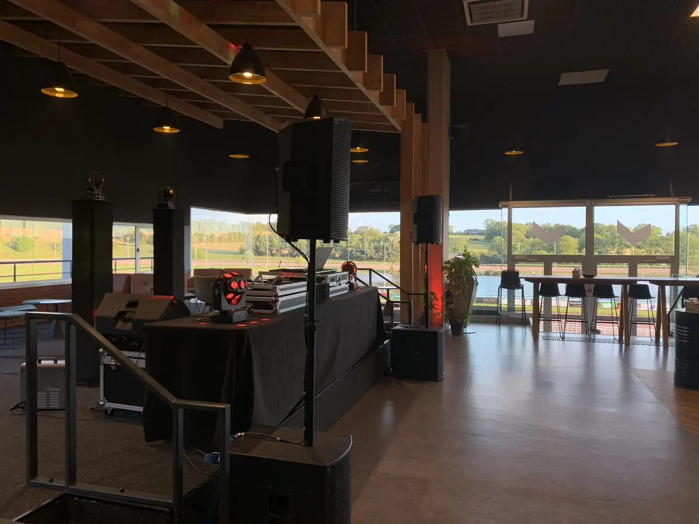
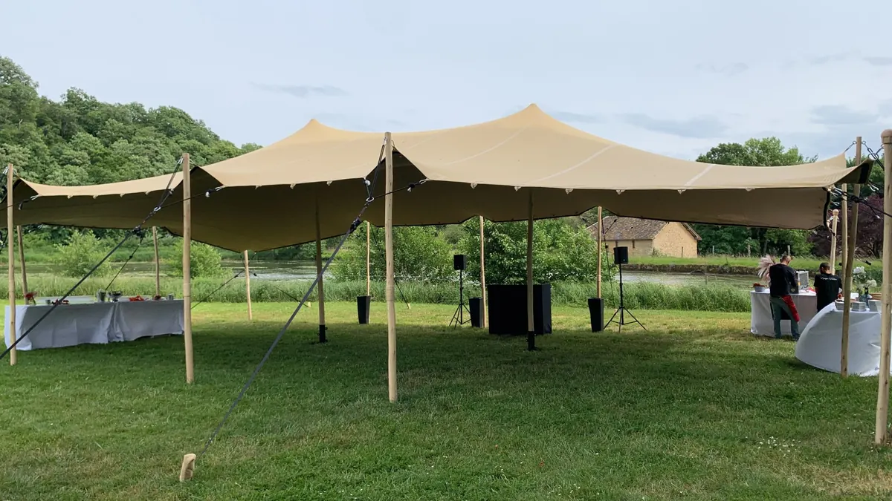
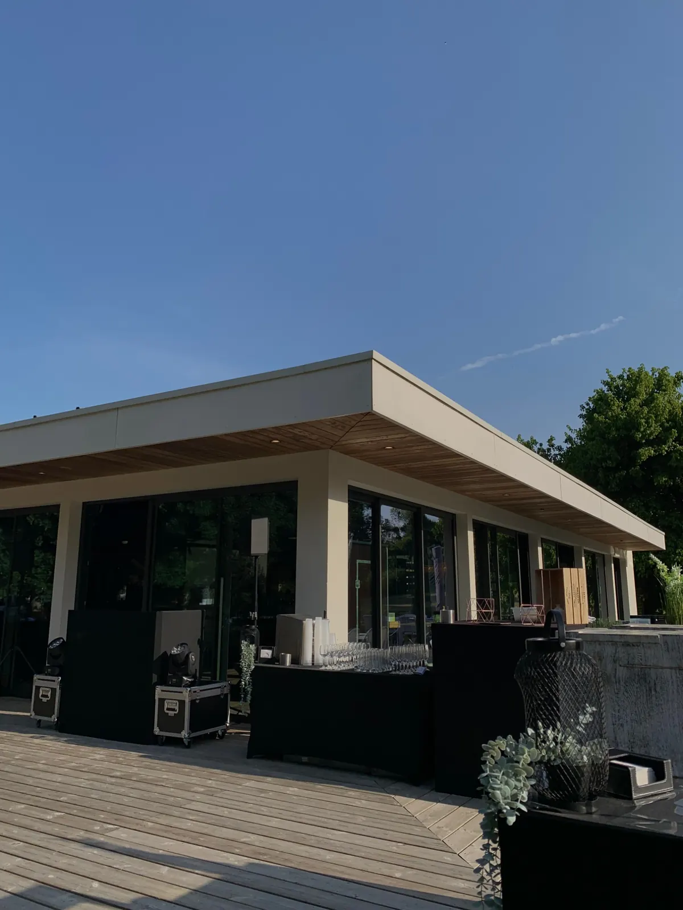
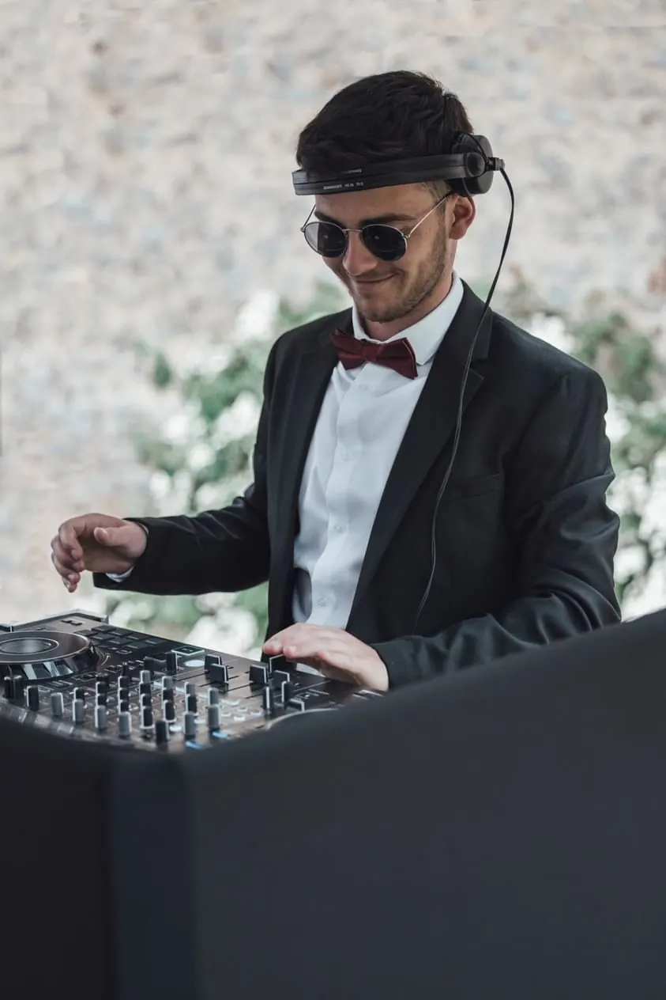

Prestataire DJ en évènementiel d’entreprise
Une réelle prestation DJ pour vos afterworks, team buildings, séminaires et soirées : préparée avec vous, avec du matériel professionnel. À Laval, Rennes, Angers et dans toute la Mayenne.
Demander un devisUn événement à votre image
Ce n’est pas une simple animation musicale : c’est une réelle prestation DJ en évènementiel, construite sur mesure, avec la même exigence d’organisation et de professionnalisme que pour un mariage.
01Afterworks
Une ambiance musicale pour réunir vos équipes et vos clients après le travail.
02Team buildings
La musique et la sonorisation qui accompagnent vos animations et vos temps de cohésion.
03Séminaires
Sonorisation du lieu et micros pour vos interventions, avec une ambiance adaptée à vos temps forts.
04Soirées d’entreprise
Une soirée pensée pour vos équipes, de l’accueil à la piste de danse, avec discours et temps forts coordonnés.
Un accompagnement complet
Vous n’avez pas à vous occuper du son : je prépare, j’installe et je vous accompagne, de la première discussion à la fin de l’événement.
01Préparation
Un vrai accompagnement en amont : déroulé, ambiance musicale, temps forts, discours et animations préparés avec vous.
02Sonorisation
Une sonorisation du lieu adaptée à votre salle ou à votre espace extérieur, et au nombre de participants.
03Micros et discours
Une assistance sur l’utilisation des micros, pour vos discours, vos interventions et vos animations.
04Matériel professionnel
Un matériel professionnel de qualité, choisi et installé sur mesure selon votre lieu et votre événement.
De votre demande au jour J
- 01
Votre demande
Vous m’indiquez la date, le lieu et le type d’événement. Je vous adresse un devis gratuit et personnalisé.
- 02
La préparation
Nous échangeons sur vos souhaits : ambiance, styles musicaux, déroulé de l’événement, discours et temps forts.
- 03
L’installation
J’apporte, j’installe et je démonte mon matériel professionnel, en toute autonomie.
- 04
Le jour J
Je coordonne les temps forts, j’assiste vos intervenants sur les micros et je m’adapte à votre public. Vous profitez de votre événement, l’esprit libre.


